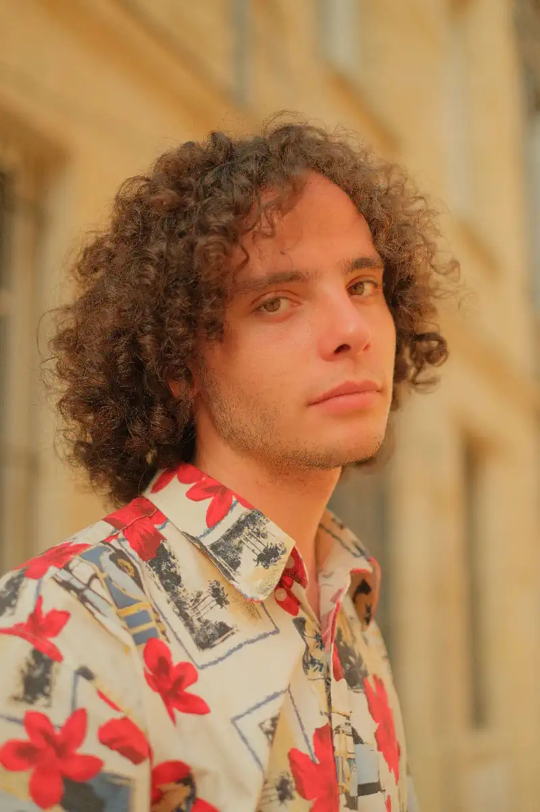

Biographie
Gaël Maignan (né en 2004) est un artiste-auteur pluridisciplinaire dont le travail explore les liens entre poésie, mémoire et espace urbain. Formé en génie urbain à l’École des Ingénieurs de la Ville de Paris et en information-communication à l’Institut Français de Presse, il développe une approche transversale mêlant écriture, arts visuels et engagement pour le patrimoine.
Sa création s’ancre dans les interstices de la ville : il photographie les détails que l’œil pressé ignore, dessine ce que les murs murmurent et écrit comme on arpente une rue. Son style, influencé par Paul Éluard, se déploie entre prose poétique, photographie documentaire et installations visuelles.